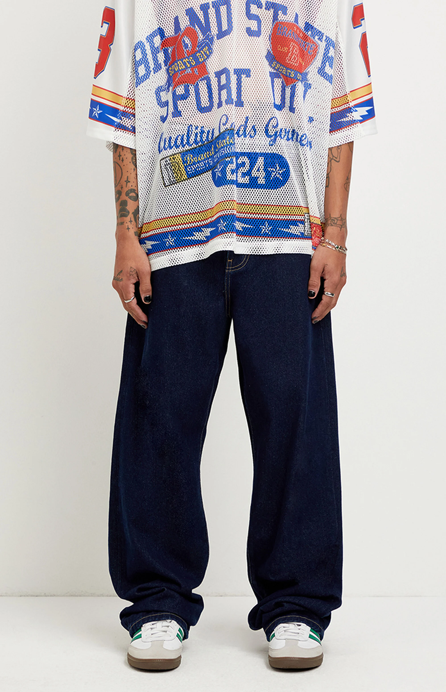
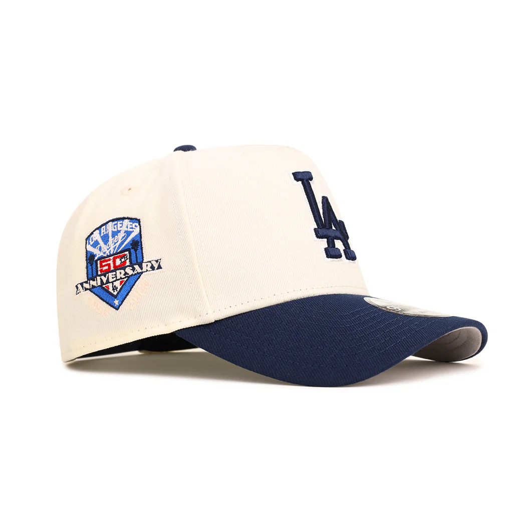

02 — Style
Building a Look
Pieces and fits I keep coming back to — mostly clean basics with Japanese-brand and ballpark influence mixed in.




Hygiene, style, fragrance, and the mindset behind them — a running collection of what's actually worked for me, written for anyone figuring out how to feel good in their own skin.
The basics that everything else builds on. A few of these are extra important if you don't have hair to protect your scalp — sunscreen and moisturizer are not optional.
SPF 30+ on any exposed skin — scalp burns fast and ages skin quickly without hair as a buffer.
A light, unscented lotion keeps skin from feeling tight or flaky — do this within a few minutes of getting out.
A soft washcloth or gentle scrub keeps skin smooth and helps products absorb better.
This is personal — write down what you've tried so future-you remembers what worked.
Pieces and fits I keep coming back to — mostly clean basics with Japanese-brand and ballpark influence mixed in.


Fragrance is the part of how I present myself that nobody can see — but everyone notices. Here's what I'm wearing and why.
[Write here about your experience with alopecia — when it started, how you felt about it, and what's changed since then.]
"[A line that sums up your mindset — this will display as a big quote.]"
[Write about how you handle questions or comments from other people — what you say, what's helped you not let it bother you.]
[Write about how style, fragrance, and hygiene routines became part of building your confidence — connect it back to the other sections.]
The values, design, and quiet confidence I try to bring into how I dress and carry myself.
Outfield and pitcher — the discipline and style that carries over from the field to everyday life.